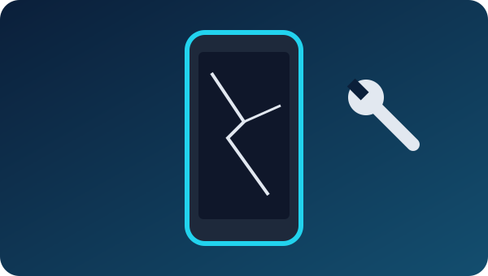
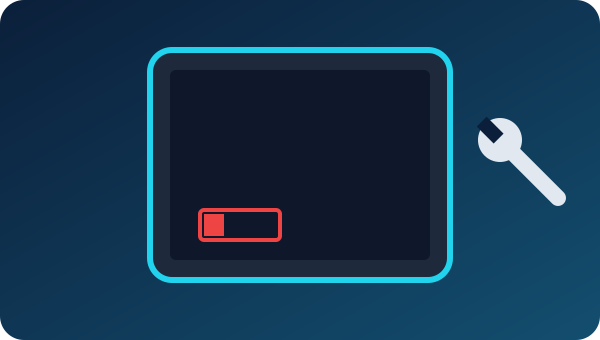
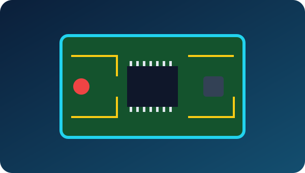

Moundsville, West Virginia
Repair
We'll try to fix anything.
We'll try to fix anything
Bring your broken device to Collins Tech LLC at 505 Grant Ave in Moundsville. Phones, tablets, computers, game consoles, and other electronics — if it has a problem, bring it in or call and we'll take a look.

Phone repair
Cracked screens, weak batteries, charging problems, and other phone issues, including iPhone screen and battery replacement. We also offer phone cleaning to clear dust and lint out of ports and speakers. More about phones.

Tablet repair
Tablets have many of the same problems as phones: broken glass, batteries that won't hold a charge, charging ports that stop working, and software trouble. Bring your tablet in and we'll look it over.
PC and laptop repair
Desktops and laptops that are slow, won't start, crash, or are acting funky. We can troubleshoot hardware and software, remove viruses, and reinstall the operating system when needed. More about computers.
Game console repair
Game consoles and controllers that won't power on, overheat, won't read discs, or have worn or broken parts. Bring in your console or controller and tell us what it's doing.

Other electronics
Don't see your device listed? We'll try to fix anything. Call (304) 312-2376 and describe the problem, or bring it by the shop.
Ready to get started?
Call (304) 312-2376 or stop by 505 Grant Ave, Moundsville, WV 26041 · Mon–Fri 9AM–6PM. Contact us for a quote.